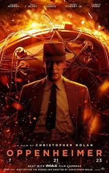

|
The Creator |
Gareth Edwards |
6,2/10 |
Estados Unidos |
Ciencia Ficción |
2h 13m |
En medio de una futura guerra entre la raza humana y las fuerzas
de la inteligencia artificial, Joshua, un curtido ex agente de las fuerzas
especiales que sufre por la desaparición de su esposa, es reclutado para
cazar y matar al Creador, el arquitecto de IA avanzada que ha desarrollado
un arma misteriosa con el poder de poner fin a la guerra, e incluso a toda
la humanidad.
|
29/9/23 |
|
SAW X |
Kevin Greutert |
6,3/10 |
Estados Unidos |
Terror |
1h 58m |
Persiguiendo un procedimiento que supuestamente curaría su cáncer,
John Kramer viaja a México para someterse a este tratamiento, sólo para
descubrir que era estafa. Ahora, el estafador se convierte en la presa del
nuevo juego de Jigsaw. |
29/9/23 |
|
Gran Turismo |
Neil Blomkamp |
6,4/10 |
Estados Unidos |
Acción |
2h 14m |
Basada en una historia real, la película cuenta cómo cumplió su sueño un adolescente
que jugaba a 'Gran Turismo', videojuego en el que ganó una serie de competiciones
patrocinadas por Nissan, y que le sirvió de trampolín para acabar convirtiéndose en un
piloto de carreras profesional. |
11/8/23 |
|
El Exorcista: Creyente |
David Gordon Green |
4,6/10 |
Estados Unidos |
Terror |
1h 51m |
Desde la muerte de su esposa embarazada en un terremoto en Haití hace 12 años,
Victor Fielding ha criado solo a su hija Angela. Pero cuando Angela y su amiga Katherine
desaparecen en el bosque, solo para regresar tres días después sin recordar lo que les sucedió,
se desencadena una cadena de eventos que obligarán a Victor a confrontar el mal y, en su terror
y desesperación, busca a la única persona viva que ha presenciado algo así antes: Chris MacNeil.
Secuela de la película de 1973. |
6/9/23 |
|
Campeonex |
Javier Fesser |
6,2/10 |
España |
Comedia |
2h 5m |
Cuando la nueva entrenadora novata del equipo de los "campeones"
termina matriculándolos en atletismo en lugar de baloncesto, se sucederán una serie
de situaciones locas debido a las exigencias de la nueva disciplina y la sorprendente
capacidad de la entrenadora para atraer todo tipo de desgracias y calamidades. |
18/8/23 |
|
Los Mercen4rios |
Scott Waugh |
4,7/10 |
Estados Unidos |
Acción |
1h 43m |
Cuarta entrega de la saga de 'Los mercenarios'. El veterano mercenario Barney “Esquizo” Ross (Sylvester Stallone) y su equipo
de estrellas, formado por los hombres más duros (Jason Statham, Dolph Lundgren, 50 Cent, Megan Fox…), afrontan un nuevo desafío,
en una trama cargada de acción. Para superarlo y salir airosos, deberán recurrir a su ingenio, experiencia y a la fuerza bruta que
los caracteriza. |
29/9/23 |
|  |
Oppenheimer |
Cristopher Nolan |
7,6/10 |
Estados Unidos |
Biografia |
3h 1m |
En tiempos de guerra, el brillante físico estadounidense Julius Robert Oppenheimer (Cillian Murphy),
al frente del "Proyecto Manhattan", lidera los ensayos nucleares para construir la bomba atómica para
su país. Impactado por su poder destructivo, Oppenheimer se cuestiona las consecuencias morales de su
creación. Desde entonces y el resto de su vida, se opondría firmemente al uso de armas nucleares. |
20/7/23 |
|
The Equalizer 3 |
Atoiner Fuqua |
6,3/10 |
Estados Unidos |
Acción |
1h 48m |
Desde que renunció a su vida como asesino del gobierno, Robert McCall (Denzel Washington)
ha luchado para reconciliarse con las cosas horribles que ha hecho en el pasado y encuentra
un extraño consuelo en hacer justicia en nombre de los oprimidos.
Mientras se encuentra en su casa en
el sur de Italia, descubre que sus nuevos amigos están bajo el control de los jefes del crimen
local. A medida que los acontecimientos comienzan a complicarse, McCall entiende lo que tiene que
hacer: convertirse en el protector de sus amigos enfrentándose a la temida mafia.
|
1/9/23 |